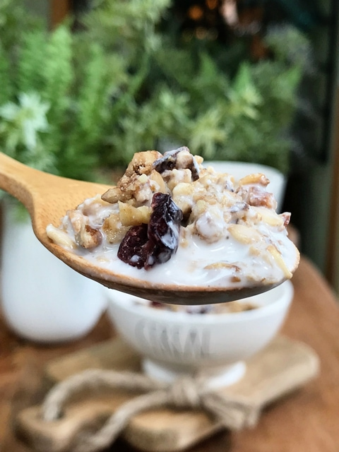
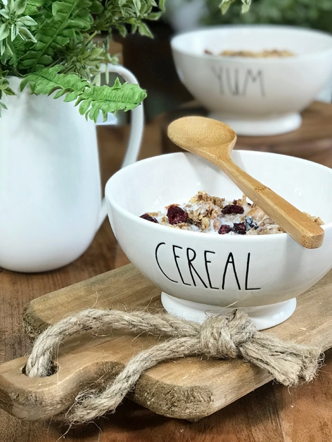

Maple Nut & Cranberry Muesli
 raw / gluten-free / vegan
raw / gluten-free / vegan
Muesli (pronounced “muse-lee”) is a Swiss-German breakfast cereal. It’s neither oatmeal nor granola; it is based on raw rolled oats and other ingredients such as grains, fresh or dried fruits, seeds, and nuts.
It sounds very similar to granola, but is typically less sweet, and has a more porridge-like texture when milk is added. With my Scandinavian, Norwegian, and German heritage, it’s no wonder why I have always loved cereals like these. Ok, ok, I LOVE all cereals… I confess. BUT there is something so grounding and warming when it comes to these muesli cereals.
Why I LOVE Muesli
Muesli is convenient and easy for breakfast. Since it can be made ahead of time and stored for long-term use, it makes for a quick grab-n-go breakfast in the morning. One way that I love to prepare it is to place some into a bowl then layer on some coconut yogurt and whatever fresh fruit I have on hand.
You can enjoy it crunchy, or you can soak the muesli for 15 minutes (up to overnight) in dairy-free milk. Another idea is to warm it in hot water; everything softens up leaving you with a porridge-like cereal that tastes amazing! The blend that I created below will ensure the optimal mix of chewy and crunchy. Another reason I love this type of breakfast is that it takes quite a bit of chewing and so it slows down my rate of eating. It FORCES me to eat mindfully! A great habit to cultivate.
Time-Saving Tip
The beauty of recipes like this is that not only are they easy to make in big batches… they keep well when stored. By placing them in an airtight glass jar, it’ll stay fresh in your cupboard for two to three weeks or they can be frozen for months. So go ahead and make up a few large batches, soon you will have built up a stock of raw healthy meals for those busy mornings.
There are countless ways in creating muesli… they can be sweeter, nuttier, heavier in oats or grains, sugar-free, dried fruit free… you name it. If you are looking to add some new breakfast foods to your weekly menu, try giving these muesli recipes a try. I believe that it is important to rotate the foods that a person eats. This can help prevent food allergies, provides more of a balance of nutrition, and keeps things interesting. This type of breakfast is very filling due to the healthy fats and fiber. So watch your serving size (should only be 1/3 – 1/2 cup max). I am sorry, but I failed to measure out how many cups this recipe made. It is a lot, I can tell you that. Enjoy! amie sue

Ingredients:
- 3 apples, cored and chopped
- 1 1/2 cups raisins, rehydrated
- 1/4 maple syrup
- 2 Tbsp lemon juice
- 2 Tbsp lemon zest
- 1 Tbsp vanilla extract
Dry ingredients:
Preparation:
- A little prep is needed in the soaking department.
- Soak each nut and seed as indicated in the links above.
- Also, rehydrate the raisins by soaking them in enough warm water to cover them. These only need to be soaked for roughly 15 minutes. This is just for the ease of blending.
- In a food processor, place the fresh apples, raisins, maple syrup, lemon juice, lemon zest, vanilla, and 1/4 cup of the sunflower seeds. Process until completely smooth.
- Transfer the mixture to a large mixing bowl.
- Add the remaining 1/4 cup of sunflower seeds, oats, nuts, cranberries, coconut, cinnamon, and salt to the food processor. Coarsely chop with a few quick pulses. Add them to the bowl with the apple mixture and mix well.
- Spread mixture out on the teflex dehydrator sheets.
- Dehydrate at 145 degrees (F) for 1 hour, reduce temp to 115 degrees (F) for an additional 10-16 hours.
- The dry time will always vary, based on your climate, humidity, the make/model of your dehydrator, and how full it is.
- Once it is completely cool, it should crisp up even more. At this time, in small batches, place the dried cereal in a food processor and pulse just enough times to break it down into a small crumble.
- Store in a sealed glass container for 2-3 weeks on the counter or even longer in the freezer.
The Institute of Culinary Ingredients:
- To learn more about maple syrup by clicking (here).
- Why do I specify Ceylon cinnamon? Click (here) to learn why.
- What is Himalayan pink salt and does it really matter? Click (here) to read more about it.
Culinary Explanations:
-
Why do I start the dehydrator at 145 degrees (F)? Click (
here) to learn the reason behind this.
-
When working with fresh ingredients, it is important to taste test as you build a recipe. Learn why (
here).
-
Don’t own a dehydrator? Learn how to use your oven (
here). I do however truly believe that it is a worthwhile investment. Click (
here) to learn what I use.

© AmieSue.com